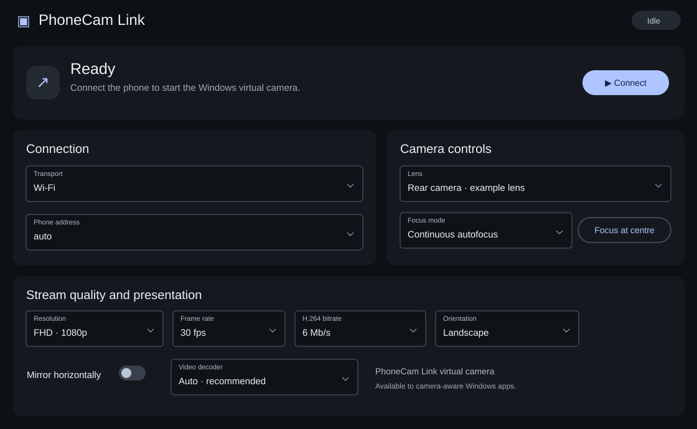
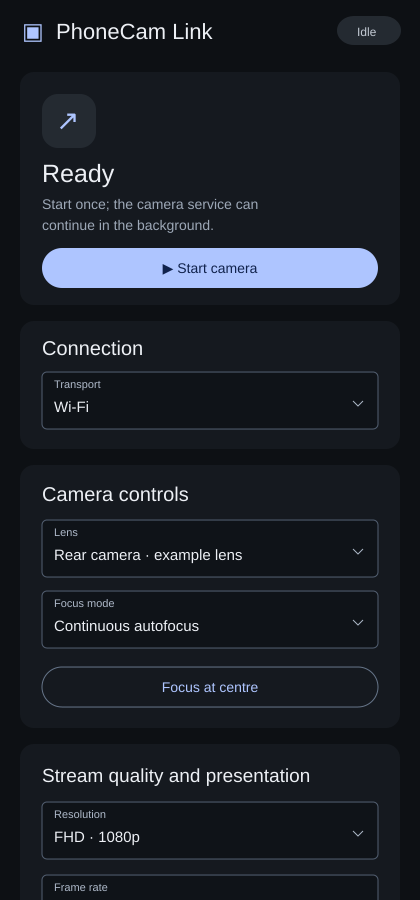

Point the phone at your notes, a prototype, or your next creation. Share that camera view through your call or stream.
DEMOS & TUTORIALS
Use-case images are concept visualizations. App compatibility and camera permissions apply. Select your microphone separately in the call or streaming app.
02 — MEET PHONECAM LINK
Your camera. Your controls.
Choose a lens. Set the focus. Make the picture yours.
PhoneCam Link · Windows— □ ×

WINDOWS 11 · RECEIVE & CONTROL

ANDROID · CAPTURE
Reconstructed from the PhoneCam Link interface source. Blue accents match this website; example lens values are illustrative. These are not captured app screenshots.
01
Lens & focus
Discover available lenses. Choose continuous or locked focus, or focus at the centre—from either app.
02
Quality & orientation
HD, FHD and UHD selectors, frame rate, bitrate, orientation and mirroring. Available profiles depend on the phone and lens.
03
A Windows camera source
PhoneCam Link appears as a selectable virtual camera on Windows 11. Choose it inside your call or streaming application.
03 — A FRESH PERSPECTIVE
Your phone sees it. Your PC brings it into focus.
A camera you can move. A screen with room to see.
PhoneCam Link brings them together. Position your Android phone where the view is best, and bring its camera feed to your Windows PC.
ONE MOMENT. TWO SCREENS.
See the bigger picture.
Let your camera go beyond the edge of your phone.
Illustrative scene · not a live camera feedPHONE → PC
THE RIGHT LENS FOR THE MOMENT
Choose your lens.
Select the lenses your phone exposes. Control them from your phone or PC.
WIDE · EVERYDAY PERSPECTIVEFRONT CAMERA · YOUR SIDE OF THE SETUP
CHOOSE A PERSPECTIVE
An everyday perspective for calls, demos and more.
Rear-lens framing uses crops of one landscape; the front-camera view shows an illustrated empty workspace. These are illustrations, not camera samples. Available lenses and capture profiles depend on the phone’s Camera2 support.
EXPLORE THE CAMERA DIFFERENCE
A clearer way to show up.
Drag the divider. Imagine a different camera for your calls.
LAPTOP CAMERA CONCEPT Simulated softnessPHONECAM LINK CONCEPT Original reference image
↔ILLUSTRATIVE · NOT A CAMERA BENCHMARK
This demo applies artificial blur to one side of the same generated image. It does not measure laptop or phone camera performance. Actual quality depends on the devices, lighting and stream settings.
04 — ROOM TO EXPLORE
Set your orientation.
Choose Landscape or Portrait. Mirror either view horizontally.
PERSPECTIVE PLAYGROUND
+ FIND YOUR FRAME +
Interactive website illustration. App controls and available formats may differ by release.
05 — CONNECT YOUR WAY
Choose a connection.
Explore the connection modes. USB ADB, Wi-Fi and Wi-Fi Direct.
{{CONNECTIVITY}}
USB · ADB SETUP
Connect over USB.
Choose the mode on both devices. Start the camera. Authorize your PC.
01 / 05Connect a USB data cableConnected
Read the setup steps
Connect a USB data cable.
On Android, select USB · ADB and press Start camera.
On Windows, select USB · ADB and press Connect.
If Android asks, approve USB debugging from your PC.
Wait for the camera feed to connect.
Enable Developer options and USB debugging first. The authorization prompt appears only when approval is needed; its timing and appearance can vary. This is an illustrated setup sequence.